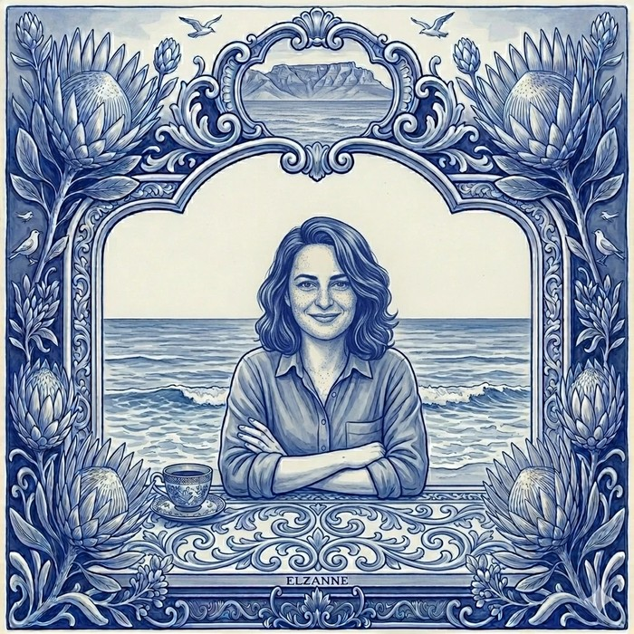

About
The thread running through my work is a question I keep coming back to: what is AI doing to how brands and audiences communicate?
My background is in strategic communication. I did my Master's at the University of Johannesburg, studying how online discourse shapes what people come to think of brands and institutions. That training is the lens I bring to most of what I do now. When AI started changing how content gets made, distributed, and received, it became the obvious next question to sit with — and the one I've been working on since.

How I got here
I've spent sixteen years working across education, technology, communications, and hospitality, in roles ranging from content strategist and marketing manager to lecturer, programme manager, and curriculum designer. The common thread across all of them is a kind of work rather than an industry: I tend to be brought in when an organisation needs someone who can understand the strategic question and the operational reality at the same time, and translate between the two clearly enough that both sides can act.
I'm now building a consulting practice for small and mid-sized businesses, thinking through their own AI integration and practically looking at what it's doing to their content, their communication, and the trust they've built with the people they serve.
Get in touch
Your team is using AI for content but the output doesn't feel right. I help you figure out why and what to change.
Email me and let's get your content working for your brand again.